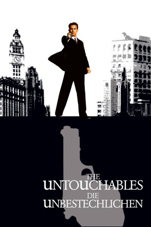

Auszeichnungen: 1 Oscars gewonnen für 3 Oscars nominiert 1 GoldenGlobes gewonnen 1 BAFTA-Awards gewonnen
 gesehen am 09.08.2015
gesehen am 09.08.2015Alternativ: The Untouchables
Auszeichnungen: 1 Oscars gewonnen für 3 Oscars nominiert 1 GoldenGlobes gewonnen 1 BAFTA-Awards gewonnen gesehen am 09.08.2015
 
 IMDB-Wertung: 7.9 / 10
IMDB-Wertung: 7.9 / 10  Metascore:
Metascore: 
Der Kampf des Schatzamt-Agenten Elliot Ness gegen die Chicagoer Unterwelt im Allgemeinen und den Boss der Bosse, Al Capone im Speziellen. Um den Mafia-Patron dingfest zu machen bedarf es eines kleinen Teams aufrechter Polizisten, die nicht auf dessen Gehaltsliste stehen.
Jahr: 1987
Dauer: 119 Minuten
FSK: 16
Land: USA Studio: Paramount PicturesTonspuren: DD2.0 - ,
Untertitel:
Auflösung: 1080p (1920×816) Größe: 4526 MB
Regisseur:  Brian De Palma
Brian De Palma
Drehbuch: Oscar Fraley, Eliot Ness, David Mamet
Soundtrack: Ennio Morricone
Darsteller:
 Kevin Costner als Eliot Ness
Kevin Costner als Eliot Ness Sean Connery als Jim Malone
Sean Connery als Jim Malone Charles Martin Smith als Agent Oscar Wallace
Charles Martin Smith als Agent Oscar Wallace Andy Garcia als Agent George Stone / Giuseppe Petri
Andy Garcia als Agent George Stone / Giuseppe Petri Robert De Niro als Al Capone
Robert De Niro als Al Capone Richard Bradford als Police Chief Mike Dorsett
Richard Bradford als Police Chief Mike Dorsett Billy Drago als Frank Nitti
Billy Drago als Frank Nitti Patricia Clarkson als Catherine Ness
Patricia Clarkson als Catherine Ness Vito D'Ambrosio als Bowtie Driver
Vito D'Ambrosio als Bowtie Driver Del Close als Alderman
Del Close als Alderman Chelcie Ross als Reporter
Chelcie Ross als Reporter Will Zahrn als Defense Attorney
Will Zahrn als Defense Attorney Clifton James als District Attorney , uncredited
Clifton James als District Attorney , uncredited Jack Kehoe als Walter Payne
Jack Kehoe als Walter Payne Brad Sullivan als George
Brad Sullivan als George Robert Swan als Mountie Captain
Robert Swan als Mountie CaptainDatei: X:\1987\Unbestechlichen, Die (1987, FSK16, 1920x816).mkv seit 14.02.2015
Festplatte: HD 1987-1991
 Es gibt insgesamt 50 Filme in der Gruppe '1987'
Es gibt insgesamt 50 Filme in der Gruppe '1987'